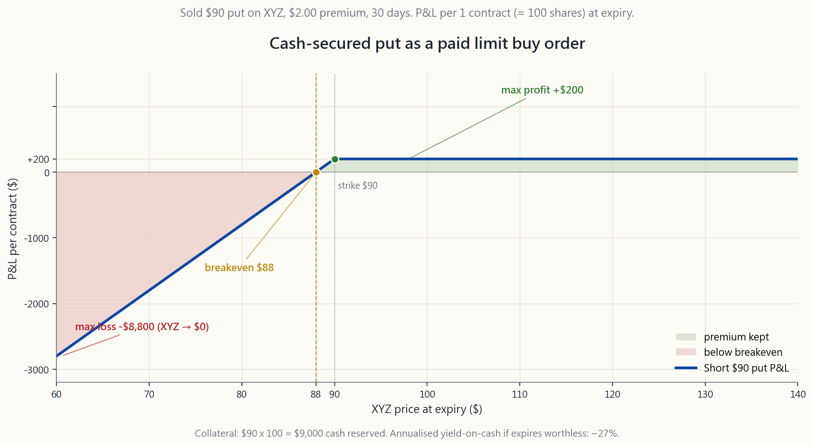
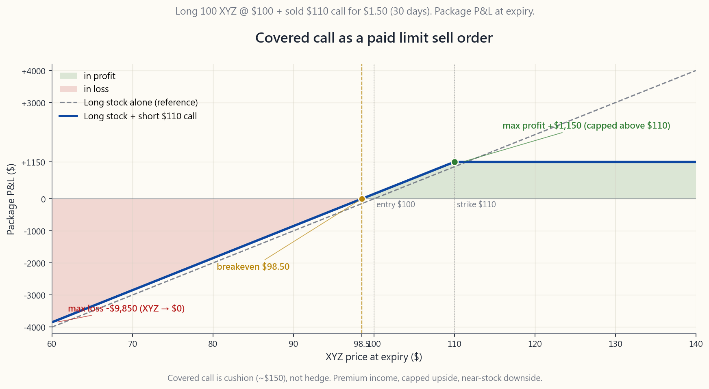

Week 26: Options as limit orders — getting paid to leave instructions on the table
1. Why This Is Important
Last week we mapped the options vocabulary — calls, puts, strikes, expiry, premium, theta. Vocabulary on its own is inert. What turns options from an exotic instrument into a workhorse for a long-only retail book is the right mental model, and the right model is the simplest one: a sold option is a limit order that pays you to wait.
A cash-secured put at the $90 strike is the same instruction you would already give your broker — "I'd buy 100 shares of XYZ at $90" — except the broker now hands you a cheque for leaving that instruction on the table. A covered call at the $110 strike is "I'd sell my XYZ at $110", again with a cheque attached. Same trigger price, same buy-low / sell- high discipline, plus income for the time the trigger sits unfilled.
This matters for four concrete reasons:
(1) Idle cash is a real cost, not a free option. Most retail investors keep a "waiting to deploy" sleeve sitting in money market or T-bill funds at the going short rate. That is the *opportunity cost floor*; against an at-the-target cash-secured put on a name you genuinely want to own, the cash works two or three times harder for the same target entry price. The premium is not a bonus — it is what your cash should be earning while it waits.
**(2) Selling decisions are emotionally expensive; getting paid to pre-commit is cheap.** Every long-only investor knows the "I should have sold" feeling. A covered call writes the sell ticket in advance, at a price you chose in calm-mind, and pays you to hold yourself to it. The premium is the institutional equivalent of paying yourself an adviser fee for not moving the goalposts.
(3) This is the L2 income tactic in the barbell. Horace's barbell holds high-conviction safety on one end and asymmetric speculation on the other; the question is what the names between those two ends do all day. They sit in the L2 ("high-quality long-only, permanent compounders") tranche and earn premium by writing covered calls and cash-secured puts at the edges of where the holder would already act. The L2 sleeve is the income engine of the barbell, and the income is engineered, not hoped-for.
(4) Options are a tax tool first, a leverage tool second. Selling a covered call lets you reduce delta on a winner without selling the share — exposure shifts, the tax lot doesn't. Selling a cash-secured put lets you build a position at a chosen entry *over multiple expiries*, with each unfilled expiration banking premium that lowers the eventual cost basis. For a successful long-only investor the largest unspoken fee is capital gains tax; the order-replacement view of options is how you start managing it.
This week we walk through the mechanics in slow motion. Week 27 takes covered calls deep — strike selection, theta capture, when to roll. Week 28 does the same for cash-secured puts and the wheel.
2. What You Need to Know
2.1 The reference book — $50k account, 100 shares of XYZ at $100
To keep every example anchored to one balance sheet, picture a $50,000 account holding 100 shares of XYZ, a SPY-equivalent ETF trading at $100/share. That is $10,000 of stock and $40,000 of cash. This account is large enough to demonstrate both strategies side by side: there are 100 shares to write a covered call against, and there is plenty of cash to secure a put at almost any strike.
For the lesson we will work with two specific strikes:
- $90 cash-secured put (10% below spot). Collateral required:
- $110 covered call (10% above spot). Collateral required:
XYZ has reasonable implied volatility, so the front-month options pay roughly $2.00 for the put and $1.50 for the call. Those numbers carry through every example below. See the payoff diagrams in course/image/week26_csp_payoff.py and course/image/week26_cc_payoff.py, and the interactive walk-through in course/interactive/week26_orders_lab.html.
2.2 The cash-secured put as a limit buy order
A cash-secured put (CSP) is an instruction you have already used in plain-vanilla form. The plain-vanilla version is a limit buy order: "Buy 100 XYZ at $90 or below, good-til-cancelled." While the order sits unfilled, the $9,000 you set aside earns the broker's cash sweep rate.
The CSP version is the same instruction with a maturity date and a cheque:
*"I will buy 100 shares of XYZ at $90. Here is $9,000 in collateral. Pay me $200 to leave that instruction open for 30 days."*
Three outcomes, and only three:
keep the $200 premium and the $9,000 collateral is released. Annualised yield-on-cash: $200 / $9,000 x (365/30) ~ 27.0%. You can write the next month's put.
shares at $90. Effective cost basis = $90 - $2 = $88/share, which is below where the stock actually printed. You bought at a discount to your own limit price.
basis, but now sitting on a mark-to-market loss. The downside is identical to having had a limit order fill at $90, minus the $2 cushion. Worst case (XYZ -> $0): -$8,800 vs. the limit-order's -$9,000 — strictly better.

The image script week26_csp_payoff.py shades this exact P&L profile
from $60 to $140 with breakeven, max profit and tail loss labelled.
The honest framing: a cash-secured put **never does worse than a limit order at the same strike** in P&L terms, in exchange for a single cost — the option has an expiry, the limit order doesn't. If your trigger price is a hard line you would still want to act on six months from now, the CSP just becomes a rolling discipline: write the new one the day the old one expires.
2.3 The covered call as a limit sell order
The covered call (CC) is the exit-side mirror image. Plain-vanilla version: limit sell 100 XYZ at $110, GTC. Option version:
*"I will sell my 100 shares of XYZ at $110. The shares themselves are the collateral. Pay me $150 to leave that instruction open for 30 days."*
The three outcomes:
100 shares and the $150 premium. The $150 is income on top of dividends; the shares are unmoved. Yield-on-position: $150 / $10,000 x (365/30) ~ 18.3% annualised on the share value.
at $110. Total proceeds: $110 + $1.50 premium = $111.50/share, or $11,150 on the position. That is $1,150 above your $10,000 cost.
Anything XYZ does above $111.50 you do not capture — that is the trade-off you accept for getting paid. The image
week26_cc_payoff.py shows the payoff capping at +$1,150 for any
stock price >= $110.
![Payoff diagram for the covered-call package — long 100 shares of XYZ at $100 entry plus one short $110 call sold for $1.50 — plotted across XYZ expiry prices from $60 to $140. The blue solid line is the package P&L; a dashed grey line shows the long-stock-only reference for comparison. The package caps at +$1,150 for any price at or above the $110 strike, crosses zero at the $98.50 breakeven, and slopes down to -$9,850 at XYZ = $0. The two lines run almost parallel on the downside — the $150 premium is cushion, not hedge.](image/week26_cc_payoff.png)
The downside is unchanged from owning the stock outright, minus the $1.50 cushion: at XYZ -> $0, the position is worth -$10,000 + $150 = -$9,850, vs. -$10,000 for a no-call holder. The covered call is not a hedge — the premium is not nearly large enough — but it is cushion, income, and a pre-committed exit, all in the same ticket.
2.4 Walking the mechanics in slow motion
Day 0 of the lesson month:
cash. XYZ front-month $90 put bid $2.00, $110 call bid $1.50, both 30 days to expiry.
$9,000 of cash as collateral; $200 lands in the account immediately. Cash sleeve is now $40k - $9k reserved + $0.2k premium = $31.2k free + $9k locked + $0.2k income.
collateral; $150 lands. The 100 shares cannot be sold while the call is open (you would be naked-short the call), but they can still collect dividends and gain/lose in price. Income to date: $350 on a $50k book in one click — that's 70 bps on net liq, or roughly 8.4% annualised, and the "trades" are sitting at the same prices you would already have wanted to act on.
daily. At $98 you do nothing. At $92 you do nothing. At $115 — the call is in the money; the share is going to be called away on expiry day, exactly as instructed. At $86 — the put is in the money; you will be assigned the 100 shares at $90, exactly as instructed.
shares delivered, $11,000 lands. Put assignment: $9,000 leaves, 100 shares of XYZ arrive. Either, both, or neither happens, depending on where XYZ closed.
There is no continuous monitoring, no chart-staring, no stop-losses to manage. The orders execute themselves. The only active step is writing the next pair of orders the following month.
2.5 Yield-on-cash: what "getting paid to wait" actually pays
The honest income comparison is yield on the **specific capital each trade ties up**, not yield on the whole account.
For the $90 CSP at $2 over 30 days:
- Capital tied up: $9,000 collateral.
- Premium: $200.
- Period yield: 200 / 9000 = 2.22% in 30 days.
- Annualised (simple, 365 days): 2.22% x (365/30) ~ 27.0%.
are assigned, the "yield" is no longer on cash — it has converted into a stock position whose return depends on the share, not the premium. A more honest figure is expected annualised yield: the premium yield x probability of expiring worthless, plus the expected return on the assigned stock x probability of assignment.
assigned at $90 in a month when XYZ printed $80, the position now has a $1,000 mark-to-market loss against the $200 income — the month was net negative, not 27% positive.
For the $110 CC at $1.50 over 30 days:
- Capital tied up: $10,000 of stock value.
- Premium: $150.
- Period yield: 150 / 10000 = 1.50% in 30 days.
- Annualised: 1.50% x (365/30) ~ 18.3%.
2.6 Where this fits in the barbell
Horace's portfolio is a barbell: safety on one end (cash, T-bills, gold, deep-ITM long-dated calls), structural-alpha speculation on the other. The middle — the diversified market-cap-weighted "core" — has been removed. But that does not mean nothing sits between the two ends. The high-quality long-only names you are *willing to own and to sell at known prices* live in an L2 income sleeve, and the L2 income sleeve is run almost entirely on covered calls and cash-secured puts.
The CSP / CC pair is what gives the L2 sleeve its yield. Without that overlay, the L2 sleeve is just a slow compounder paying dividends in the 1-2% range. With the overlay it pays the dividend plus 8-15% in option premium when nothing happens, and reverts to passive long exposure exactly at the prices the holder pre-committed to act on when something does.
This is why we treat this lesson as foundational rather than advanced. The barbell shape requires this engine to make economic sense; without it, the safety end's drag would dominate the asymmetric end's payoff.
2.7 Where this fits in the tax stack
The covered call has a second job that is at least as valuable as the income, and is rarely advertised: it lets you **reduce effective exposure on a winner without selling**. A 100-share position with a 3-year embedded gain has a covered call written against it — the share is not sold, no taxable event is realised, but the delta of the package is now ~0.3 instead of 1.0. You are short volatility while the lot continues to age toward long-term-capital-gains treatment (or, in a tax-advantaged account, while it continues to compound tax-free).
The cash-secured put plays the entry-side equivalent: it lets you build a position at a chosen price across multiple expiries. Each expiry that closes the option worthless banks short-term income (taxed at ordinary rates, ideally inside an IRA) and lowers the effective cost basis of the eventual fill. The dollar of premium banked today is more valuable than the dollar of capital gain crystallised in five years only if you bank the income inside a sheltered account — which is also why this strategy and the IRA wrapper were practically made for each other.
In a Roth IRA, none of the premium is taxed, and the strategy compounds tax-free. In a traditional IRA, the same income is tax-deferred. In a taxable account, the option-selling income lands as short-term capital gains at ordinary income rates, and you have to pencil that drag into the headline yield before deciding whether the overlay is worth it.
3. Common Misconceptions
opposite. A short stock makes money when the share falls and loses on a rally; a short put makes money when the share is flat or up and loses on a sharp fall, with the floor pegged at the strike minus the premium. Short put = neutral-to-bullish, not bearish.
like."** Far-OTM puts pay almost nothing relative to the capital they tie up. The premium / collateral ratio collapses as you move the strike further from spot, and the only time those tail puts matter is when they get hit hard. Do not chase the lottery-ticket end of the chain.
premium is a $1.50 cushion — useful, not protective. If XYZ drops from $100 to $80, the covered-call writer is down $1,850 instead of $2,000. That is barely a difference. If you want a hedge, buy a put (Week 29); if you want income with a pre-committed exit, write a call.
filling*. If you genuinely wanted to buy at $90 or sell at $110, the assignment is the trade you came for — not a failure mode. Treating assignment as something to avoid at all costs leads to rolling options forever to dodge the very fill you set up to capture.
30-day put is not 27% returned per year. It is what you receive in months where nothing happens, multiplied as if those months continued forever. The realised yield over a year always includes the months where you were assigned, and those net out to a stock-return-plus-cushion, not a 27% premium.
Every step that requires a decision is a separate ticket: sell-to- open, then optionally close-early, then expiration. Most CSP / CC writers spend 15-30 minutes per month and let the broker settle the rest. Continuous monitoring is bad practice here — it tempts you to manage a working trade out of the win.
secured puts and covered calls are not — both are bounded. The CSP's
maximum loss is (strike x 100) - premium; the CC's maximum loss
is the underlying stock going to zero, minus the premium received.
Both numbers are fully knowable when you place the trade.
premium yield is real but it is a complement, not a substitute. The bulk of long-term wealth still comes from the share's price appreciation and dividends. Options overlay turns a 7% expected return into 9-12%; it does not turn it into 30%.
This is the classic insurance-company critique, and it would be right if you were writing tail risk on an unhedged book. CSP and CC are not naked tail-writes — both are fully collateralised, and the CSP collateral is at a strike you chose on a stock *you want to own*. The asymmetry is on your side.
with (a) liquid options chains (tight bid/ask, decent open interest), (b) prices and quality you would actually want to own in your underwear at 3am, and (c) realistic IV (not so low that the premium isn't worth the time, not so high that the assignment risk dominates). For most retail books that universe is twenty names, mostly large-cap US ETFs and household-name single stocks.
4. Q&A Section
Q1: What's the difference between a "cash-secured" put and a "naked" put?
A: Collateral. A cash-secured put has the full strike-times-100 in cash set aside in the account; if assigned, the cash buys the share without margin. A naked put has only the broker's margin requirement posted, which is far less than the full collateral. Cash-secured puts are allowed in IRAs; naked puts require a margin account and a higher options approval level. For retail investors learning this strategy, always cash-secured.
Q2: Why 30 days? Why not 7 or 90?
A: Theta — option time decay — is fastest in the 21-45 day window. A 7-day option pays much less premium for the capital tied up; a 90-day option pays more dollars but has worse daily decay and locks the collateral up longer. The 30-45 day band has been the empirical sweet spot for retail premium-sellers for decades, and there is no strong reason for it to change.
Q3: What if my CSP gets assigned and I don't want the stock anymore?
A: That is a portfolio-management question, not an options question. You sell the assigned shares immediately, take the loss (or gain) net of premium, and stop writing puts on that name. The discipline is set before selling the put: only write CSPs on stocks you would actively welcome owning at the strike. If your conviction has changed, close the put before expiry instead of being assigned.
Q4: Can I close the option early instead of waiting for expiry?
A: Yes, you "buy to close" at any time. A common heuristic: if the option has lost 50-80% of its value with weeks still to go, buy it back, lock in the realised gain, and write the next one. The opposite case — option price has doubled against you — is the moment to think hard about whether you still want assignment at the strike. If not, buy it back at a loss and reset.
**Q5: Why does the lesson keep saying "100 shares" instead of any quantity?**
A: One US equity options contract represents 100 shares. That is the contract spec — there is no smaller unit. If you want 50-share exposure, options are not the right tool; use a limit order. If you want 250-share exposure, you sell two contracts and use a 50-share limit order for the residual.
Q6: Does this strategy work better in a bull market or a bear market?
A: Both, differently. In a slow-grind bull market, neither side is assigned often: the puts expire worthless (you keep premium), the calls are sometimes called away at your target (you sell at your target plus premium). In a bear market the puts get assigned at strikes that look expensive in hindsight, but the assignment was exactly the trade you set up; the calls expire worthless and pay income to cushion the drawdown. Where it works poorly is a vertical melt-up — your covered calls cap you below the rally — or a sharp crash — your CSPs assign at strikes far above market.
Q7: Why "$50k account with 100 shares of XYZ" — is that a typo?
A: Anchored deliberately. One options contract controls 100 shares; you cannot write a covered call against fewer. The "$50k account" framing is the realistic retail balance sheet — $50k can comfortably support one covered call and one cash-secured put on a $100 stock with $30k of free cash to spare. Smaller accounts typically write only the call OR only the put, not both at once.
Q8: What about taxes — short-term capital gains every month?
A: Yes, every premium banked in a taxable account is short-term capital gain at ordinary income rates, every month. This is why the strategy belongs mostly in tax-advantaged accounts (IRA, Roth IRA), where the premium income compounds untaxed. In a taxable account the after-tax yield is 30-40% lower than the headline.
Q9: My broker rejected my "sell-to-open put" order. Why?
A: Almost certainly an options approval level. Brokers tier options permissions: Level 1 is covered calls only; Level 2 adds long puts / calls; Level 3 adds cash-secured puts and credit spreads; Level 4 adds naked options. You need at least Level 2 or 3 for cash-secured puts. Apply for the level once, mention this strategy, and approval is typically routine for a retail account with experience.
Q10: Is the wheel — alternating CSP and CC — the same thing?
A: Yes, the wheel is exactly the strategy in this lesson, run on a loop: CSP until assigned, then CC on the assigned shares until called away, then CSP again. We will deep-dive the wheel in Week 28 once both sides are individually well understood (CC in Week 27, CSP in Week 28). This week is the conceptual unlock; the next two weeks are the operating manuals.
Q11: Implied volatility just spiked — should I sell more options?
A: Carefully. High IV means premiums are larger, which is the obvious attraction. But high IV also means the market is pricing in a real move, and the assignment probability is correspondingly higher. A useful framing: high IV is the market paying you a fair price for the extra risk you're underwriting, not a free lunch. Size accordingly.
Q12: Do dividends complicate covered calls?
A: They can. American-style call options can be exercised early — particularly the day before an ex-dividend date if the dividend is larger than the call's remaining time value. The shares are then called away early, and the dividend goes to the new owner. To avoid this, either roll the call forward before ex-div, or only write covered calls on stocks where the time-value cushion comfortably exceeds the upcoming dividend. Most ETFs (SPY etc.) pay quarterly dividends well below typical option time value, so this is rarely an issue.
第26週：期權作為限價盤——收取報酬，靜候指令成交
1. 為何此課題至關重要
上週我們梳理了期權詞彙——認購期權、認沽期權、行使價、到期日、期權金、時間值。光有詞彙，仍是一潭死水。將期權從晦澀的衍生工具，蛻變為長倉零售投資組合得力助手的關鍵，在於建立正確的心智模型，而最正確的模型也是最簡單的：沽出期權，就是一張付錢給你耐心等候的限價盤。
在$90行使價賣出現金擔保認沽期權，本質上與你早已向經紀下達的指令別無二致——「以$90買入100股XYZ」——只是現在經紀會因你將這張指令留在桌上而多付你一張支票。$110的備兌認購期權，就是「以$110賣出我手持的XYZ」，同樣附帶一張支票。觸發價相同，高沽低買的紀律相同，外加指令未成交期間的收益。
這對以下四個具體原因至關重要：
(1) 閒置現金是實實在在的成本，而非免費的選擇。 大多數零售投資者都會把「等待部署」的資金放在貨幣市場或國債基金中，賺取當時的短期利率。這是機會成本的下限；相比之下，針對一隻你真心想持有的股票，賣出一張目標價的現金擔保認沽期權，同樣的目標入場價下，現金的效益可提升兩至三倍。期權金並非額外獎賞——它才是你的現金在等待期間應該賺取的回報。
(2) 賣出決策在情感上代價高昂；預先承諾且收取報酬，則成本低廉。 每位長倉投資者都熟悉「早該賣掉」的遺憾。備兌認購期權讓你提前開好賣出委託，以你在心平氣和時選定的價格，並付你報酬，讓你信守承諾。期權金等同於你預付給自己的顧問費，用以阻止自己移動球門柱。
(3) 這是槓鈴策略中的L2收益戰術。 陳馬的槓鈴策略，一端持有高確信度的安全資產，另一端押注不對稱投機；問題在於兩端之間的持倉，整天在做什麼。它們坐落於L2（「高質素長倉永久複利增長」）份額，透過在持有人早已預備行動的邊際價位，賣出備兌認購期權及現金擔保認沽期權來賺取期權金。L2份額是槓鈴的收益引擎，而這份收益是刻意設計的，而非憑空期盼的。
(4) 期權首先是稅務工具，其次才是槓桿工具。 賣出備兌認購期權，讓你在無需沽股的情況下降低對贏家股份的實際曝險——曝險結構改變，稅務批次不動。賣出現金擔保認沽期權，讓你可以在選定的入場價跨越多個到期月份建立倉位，每次期權空手到期都能積累期權金，從而降低最終持倉的有效成本基礎。對於成功的長倉投資者而言，最隱性的最大費用是資本增值稅；以「替代限價盤」的視角看待期權，正是管理這筆費用的起點。
本週我們逐步細拆機制。第27週深入探討備兌認購期權——行使價選取、時間值收割及何時滾倉。第28週以同樣力度剖析現金擔保認沽期權及輪動策略。
2. 你需要掌握的知識
2.1 參考帳戶——$50,000帳戶持有100股XYZ，每股$100
為使每個例子都有統一的資產負債表作錨點，請想像一個$50,000帳戶，持有100股XYZ（一隻類似SPY的交易所買賣基金，交易價為$100/股）。股票市值$10,000，現金$40,000。這個帳戶規模足以同時示範兩種策略：手持100股可用於賣出備兌認購期權，$40,000現金足以為幾乎任何行使價的認沽期權提供保證金。
本課將使用兩個具體行使價：
- $90現金擔保認沽期權（較現價低10%）。所需保證金：
- $110備兌認購期權（較現價高10%）。所需保證金：
XYZ的引伸波幅合理，因此前月期權大約為認沽期權報$2.00，認購期權報$1.50。以下所有例子均沿用這些數字。損益圖見 course/image/week26_csp_payoff.py 及course/image/week26_cc_payoff.py， 互動式教程見 interactive/week26_orders_lab.html。
2.2 現金擔保認沽期權即限價買入盤
現金擔保認沽期權（CSP）是你以普通形式早已使用過的指令。普通形式是限價買入盤：「以$90或以下買入100股XYZ，有效直至取消。」訂單未成交期間，預留的$9,000賺取經紀的現金孳息利率。
CSP版本是相同的指令，附加到期日及一張支票：
「我將以$90買入100股XYZ。以下是$9,000保證金。請付我$200，讓這張指令在30天內保持有效。」
只有三種結果，僅此三種：

圖片腳本week26_csp_payoff.py以盈虧平衡點、最大盈利及尾部虧損標籤，在$60至$140區間為損益剖面塗上陰影。
誠實的表述方式：現金擔保認沽期權在損益方面絕不遜於相同行使價的限價盤，代價只有一個——期權有到期日，限價盤沒有。若你的觸發價是六個月後仍願意行動的硬性底線，CSP只需成為一個滾動紀律：舊期權到期當天，賣出新的一份。
2.3 備兌認購期權即限價賣出盤
備兌認購期權（CC）是退出端的鏡像。普通形式：限價賣出100股XYZ，目標$110，有效直至取消。期權版本：
「我將以$110賣出我的100股XYZ。股份本身即保證金。請付我$150，讓這張指令在30天內保持有效。」
三種結果：
week26_cc_payoff.py展示損益於股價大於等於$110時，封頂於+$1,150。
下行風險與直接持股相同，減去$1.50緩衝：XYZ跌至$0，倉位價值為-$10,000 + $150 = -$9,850，對比不賣出認購期權者的-$10,000。備兌認購期權並非對沖——期權金遠不足以提供保護——但它是緩衝、收益及預先承諾的退出，三者集於一張交易票。
2.4 逐步細拆機制
課程月份的第0天：
無需持續監察，無需緊盯圖表，無需管理止蝕盤。訂單自動執行。唯一的主動步驟，是下個月再開出新的一對訂單。
2.5 現金收益率：「收取報酬靜候」實際能賺多少
誠實的收益比較，是以每筆交易實際佔用的具體資本計算收益率，而非以整個帳戶計算。
$90 CSP，$2期權金，30天：
- 佔用資本：$9,000保證金。
- 期權金：$200。
- 期間收益率：200 / 9000 = 2.22%（30天）。
- 年化（簡單計算，365天）：2.22% x（365/30）~ 27.0%。
$110 CC，$1.50期權金，30天：
- 佔用資本：$10,000股票市值。
- 期權金：$150。
- 期間收益率：150 / 10000 = 1.50%（30天）。
- 年化：1.50% x（365/30）~ 18.3%。
2.6 此策略在槓鈴中的定位
陳馬的投資組合是一個槓鈴：一端配置安全資產（現金、國債、黃金、深度價內長期認購期權），另一端持有結構性阿爾法的投機倉位。中間部分——市值加權的分散核心投資組合——已被移除。但這並不意味著兩端之間什麼都沒有。你願意在已知價格買入或賣出的高質素長倉股份，就坐落於L2收益份額，而L2收益份額幾乎完全依賴備兌認購期權和現金擔保認沽期權運作。
CSP/CC組合正是賦予L2份額收益的來源。若沒有這個覆蓋層，L2份額不過是一個緩慢複利增長的倉位，股息收益率僅1-2%。加入覆蓋層後，在無事發生的月份，它除了股息，還能額外帶來8-15%的期權金收益；而當市場有所動作時，正好以持有人預先承諾行動的價格回歸被動長倉曝險。
這正是我們將本課視為基礎而非進階的原因。槓鈴的形態需要這個引擎，方能在經濟上成立；若沒有它，安全端的拖累將壓過不對稱端的回報。
2.7 此策略在稅務層面的定位
備兌認購期權還有第二個職能，其價值至少與收益收入相當，且鮮少被人宣揚：它讓你在無需賣股的情況下，降低對贏家股份的實際曝險。一個持有3年浮盈的100股倉位，賣出備兌認購期權後，股份未被出售，無稅務事件發生，但整體倉位的貝塔值已從1.0降至約0.3。你賣出波動性，同時讓稅務批次繼續老化，邁向長期資本增值稅率的處理門檻（或在稅務優惠帳戶中，繼續免稅複利增長）。
現金擔保認沽期權則在入場端發揮對等作用：它讓你跨越多個到期月份，以選定的價格逐步建倉。每次期權到期失值，均等同銀行存入短期收益（在稅務優惠帳戶中按普通稅率課稅），並降低最終成交時的有效成本基礎。今天存入的每一元期權金，比五年後才實現的每一元資本增值更有價值——前提是在稅務優惠帳戶內存入收益——這也正是此策略與個人退休帳戶（IRA）如天作之合的原因。
在Roth IRA中，所有期權金均免稅，策略以免稅方式複利增長。在傳統IRA中，同樣的收益遞延課稅。在應稅帳戶中，期權賣方收益按普通收入稅率以短期資本增值課稅，你必須在評估覆蓋層是否值博前，先將這部分拖累納入標題收益率的計算。
3. 常見誤解
（行使價 x 100）- 期權金；CC的最大虧損為持股跌至零，減去已收期權金。下單時兩個數字均完全可知。4. 問答環節
問1：「現金擔保」認沽期權與「裸倉」認沽期權有何分別？
答：保證金。現金擔保認沽期權在帳戶中預留了完整的行使價乘以100的現金；若被行使，現金直接用於買入股份，無需使用保證金。裸倉認沽期權僅存入經紀要求的保證金，遠少於全額保證金。現金擔保認沽期權可在IRA帳戶中使用；裸倉認沽期權則需要保證金帳戶及更高的期權開通級別。對於學習此策略的零售投資者，請務必選用現金擔保版本。
問2：為何是30天？不是7天或90天？
答：時間值——期權時間值衰減——在21至45天的窗口最為迅速。7天期權所帶來的期權金相對佔用的保證金而言太少；90天期權帶來更多美元收益，但每日衰減效率較低，且保證金鎖定時間更長。30至45天的區間，數十年來一直是零售期權金賣方的實證最優選擇，目前沒有充分理由認為這一點會改變。
問3：若CSP被行使後，我不再想持有這隻股票怎麼辦？
答：這是投資組合管理的問題，而非期權問題。你立即賣出被行使獲配的股份，扣除期權金後確認虧損（或盈利），並停止針對這隻股票賣出認沽期權。紀律應在賣出認沽期權之前建立：只針對你真心願意在行使價持有的股份賣出CSP。若你的信念已改變，請在到期前平倉，而非等待被行使。
問4：我可以在到期前提早平倉，而非等到到期日嗎？
答：可以，你可隨時「買入平倉」。常見的經驗法則：若期權在距到期仍有數週時，已損失50-80%的時間值，可買回鎖定已實現盈利，並開出下一份。反面情況——期權價格已對你不利地倍升——是認真思考是否仍願在此行使價被行使的時刻。若不願意，以虧損平倉並重新部署。
問5：為何課程一直說「100股」，而非其他數量？
答：一份美國股票期權合約代表100股。這是合約規格——沒有更小的單位。若你想要50股的曝險，期權並非合適工具；請使用限價盤。若你想要250股的曝險，可賣出兩份合約，並以限價盤補足剩餘的50股。
問6：這個策略在牛市還是熊市中效果更好？
答：兩者均可，方式不同。在緩步上升的牛市中，兩端都不常被行使：認沽期權頻繁到期失值（你保留期權金），認購期權有時在你的目標價被行使（你以目標價加期權金賣出）。在熊市中，認沽期權以事後看來偏貴的行使價被行使，但那被行使的操作正是你設置的交易；認購期權到期失值並提供期權金以緩衝回撤。此策略效果最差的情境，是垂直式急升——你的備兌認購期權使你無法參與反彈——或急跌——你的CSP以遠高於市價的行使價被行使。
問7：為何是「$50,000帳戶持有100股XYZ」——這是筆誤嗎？
答：刻意設定的錨點。一份期權合約控制100股；針對少於100股，你無法賣出備兌認購期權。「$50,000帳戶」的框架是現實的零售資產負債表——$50,000可以輕鬆支撐一份針對$100股票的備兌認購期權及一份現金擔保認沽期權，並保留$30,000的自由現金。規模較小的帳戶通常只賣認購期權或只賣認沽期權，而非同時操作兩者。
問8：稅務方面——每月均需繳納短期資本增值稅？
答：是的，在應稅帳戶中每月存入的期權金，均按普通收入稅率以短期資本增值課稅。這正是此策略主要適合稅務優惠帳戶（IRA、Roth IRA）的原因，期權金收益可在這些帳戶中免稅複利增長。在應稅帳戶中，稅後收益率比標題數字低30-40%。
問9：我的經紀拒絕了我的「開倉賣出認沽期權」訂單。為什麼？
答：幾乎可以肯定是期權開通級別問題。經紀對期權權限分層：第一級只允許備兌認購期權；第二級增加長倉認沽/認購期權；第三級增加現金擔保認沽期權及信用差價；第四級增加裸倉期權。現金擔保認沽期權至少需要第二或第三級。申請一次，說明策略用途，對有投資經驗的零售帳戶而言，審批通常是例行程序。
問10：輪動策略——交替使用CSP和CC——是同一件事嗎？
答：是的，輪動策略正是本課的策略，循環運作：持續賣出CSP直至被行使，然後對被行使獲配的股份賣出CC直至被行使，再重新開始賣出CSP。兩個方向均個別深入理解後（第27週CC，第28週CSP），我們將在第28週詳細剖析輪動策略。本週是概念的鑰匙；未來兩週是操作手冊。
問11：引伸波幅剛剛急升——我應該賣出更多期權嗎？
答：謹慎行事。高引伸波幅意味著期權金更豐厚，這是顯而易見的吸引力。但高引伸波幅也意味著市場正在對真實波動進行定價，相應地被行使的概率也更高。一個有用的框架：高引伸波幅是市場為你承擔的額外風險支付合理對價，而非免費的午餐。倉位規模請相應調整。
問12：股息會使備兌認購期權變複雜嗎？
答：有可能。美式期權合約可在到期前提前被行使——尤其是在除息日前一天，若股息金額超過認購期權剩餘的時間值，尤甚如此。此時股份提前被行使，股息歸新持有人所有。為避免此情況，可在除息日前滾倉至更遠的到期日，或只針對時間值緩衝輕鬆超過即將到來的股息的股票，才賣出備兌認購期權。大多數交易所買賣基金（如SPY等）的季度股息，遠低於典型期權時間值，因此此問題很少出現。
第26週：選擇權即限價單——收取報酬，靜待指令成交
1. 為什麼這很重要
上週我們梳理了選擇權的詞彙——買權、賣權、履約價、到期日、權利金、時間價值衰減。光有詞彙是死的。真正讓選擇權從艱澀的衍生性商品，蛻變為散戶長期多頭帳戶得力工具的，是正確的心智模型，而最正確的模型也是最簡單的：賣出選擇權，就是一張會付你錢的限價單。
在$90履約價賣出現金擔保賣權，等同於你早就想對券商下達的那道指令——「我要在$90買進100股XYZ」——差別只在於現在市場還額外開了一張支票給你，報酬你把這道指令留在桌上等待成交。在$110履約價賣出掩護性買權，則是「我要在$110賣出我的XYZ」，同樣附帶一張支票。相同的觸發價格、相同的低買高賣紀律，加上在指令尚未成交期間所賺取的收益。
這件事具有四個具體的重要性：
(1) 閒置現金是真實的成本，而非免費的選項。 多數散戶都維持一個「等待佈局」的現金部位，停放在貨幣市場或國庫券基金，賺取當前的短期利率。這是機會成本下限；對比之下，在你真心想持有的標的上賣出一個「以目標價為履約價」的現金擔保賣權，同樣一筆現金在等待相同目標進場價的過程中，可以創造兩到三倍的效益。這筆權利金不是額外紅利——而是你的現金在等待期間本就應該賺到的報酬。
(2) 賣出決策在情緒上代價高昂；提前承諾並獲得報酬則是廉價的。 每位長期多頭投資人都有「早該賣掉」的遺憾。掩護性買權讓你提前在心態冷靜時，以你自行選定的價格預先開出賣單，並付錢給自己，以換取遵守這道紀律的承諾。這筆權利金，在機制上等同於預先支付給自己一筆顧問費，讓你不去移動球門柱。
(3) 這是啞鈴策略中的L2收益戰術。 陳馬的啞鈴策略，一端是高度確信的安全資產，另一端是不對稱的投機部位；問題在於這兩端之間的標的整天在做什麼。它們坐落於L2（「高品質長期多頭、永久複利型」）部位，透過在持有人早就願意採取行動的價格邊緣，賣出掩護性買權與現金擔保賣權來賺取權利金。L2部位是啞鈴策略的收益引擎，而這份收益是工程式設計出來的，而非憑空期望的。
(4) 選擇權首先是稅務工具，其次才是槓桿工具。 賣出掩護性買權，讓你在不賣出股份的情況下降低贏家部位的Delta敝口——曝險移動了，但稅務批次紀錄未被觸發。賣出現金擔保賣權，讓你透過多個到期日以目標價格逐步建立部位，每次到期、選擇權失效所積累的權利金，都在降低最終成本基礎。對一個成功的長期多頭投資人而言，最大的隱形費用是資本利得稅；而以「替代限價單」的視角看待選擇權，正是開始管理這筆費用的方法。
本週我們將慢動作拆解這套機制。第27週深入掩護性買權——履約價選擇、時間價值收割、何時展期。第28週以同樣的方式拆解現金擔保賣權與輪轉策略。
2. 你需要掌握的內容
2.1 參考帳戶——$50,000帳戶，持有100股XYZ，現價$100
為了讓每個範例都能對應到同一張資產負債表，請想像一個$50,000帳戶，持有100股XYZ（一檔類似SPY的指數股票型基金），目前交易價格為每股$100。股票總值$10,000，現金$40,000。這個帳戶大小足以同時示範兩種策略：有100股可供賣出掩護性買權，也有充裕的現金擔保幾乎任何履約價的賣權。
本課將使用兩個具體的履約價：
- $90現金擔保賣權（低於現價10%）。所需擔保品：$90 x 100 = $9,000，從$40,000現金部位中撥出。
- $110掩護性買權（高於現價10%）。所需擔保品：已持有的100股。
2.2 現金擔保賣權——等同於限價買入指令
現金擔保賣權（CSP）是一道你早已以純粹形式使用過的指令。純粹的形式就是限價買入單：「以$90或更低價格買進100股XYZ，長效有效。」 在指令等待成交期間，你預留的$9,000存放在券商的現金帳戶中賺取利息。
現金擔保賣權版本是同一道指令，但附加了到期日與一張支票：
「我願意以$90買進100股XYZ。這是$9,000擔保金。請付我$200，讓這道指令在30天內保持有效。」
只有三種可能的結果：
圖表腳本 week26_csp_payoff.py 以$60至$140的範圍為這條損益曲線著色，並標注損益兩平點、最大獲利及尾部損失。
誠實的框架：現金擔保賣權在損益表現上永遠不遜於相同履約價的限價單，代價只有一個——選擇權有到期日，限價單沒有。如果你的目標價是你六個月後仍願意執行的硬線，現金擔保賣權就轉化為一種滾動紀律：每次舊的一份到期，就在當天賣出新的一份。
2.3 掩護性買權——等同於限價賣出指令
掩護性買權（CC）是出場端的鏡像策略。純粹的形式：限價賣出100股XYZ，目標價$110，長效有效。選擇權版本：
「我願意以$110賣出我的100股XYZ。股票本身作為擔保品。請付我$150，讓這道指令在30天內保持有效。」
三種可能結果：
week26_cc_payoff.py 顯示，在股價≥$110的任何點位，損益上限均為+$1,150。下行風險與直接持股相比幾乎相同，僅減去$1.50的緩衝：XYZ歸零時，部位價值為-$10,000 + $150 = -$9,850，而未賣出買權的持股者損失為-$10,000。掩護性買權不是避險工具——權利金遠不足以達到保護效果——但它是緩衝、收益，以及預先承諾的出場，三者合而為一。
2.4 慢動作拆解機制
本月課程的第0天：
全程不需要持續監控、盯盤或管理停損單。指令自動執行。唯一的主動步驟，是下個月重新開出新的一對指令。
2.5 現金殖利率：「收取報酬靜待」實際能賺多少
誠實的收益比較基準，是每筆交易實際佔用的特定資本上的殖利率，而非整體帳戶的殖利率。
$90現金擔保賣權，權利金$2，期間30天：
- 佔用資本：$9,000擔保金。
- 權利金：$200。
- 期間殖利率：200 / 9000 = 2.22%，為期30天。
- 年化（單利，365天）：2.22% x (365/30) ≈ 27.0%。
$110掩護性買權，權利金$1.50，期間30天：
- 佔用資本：$10,000的股票市值。
- 權利金：$150。
- 期間殖利率：150 / 10000 = 1.50%，為期30天。
- 年化：1.50% x (365/30) ≈ 18.3%。
2.6 這在啞鈴策略中的定位
陳馬的投資組合是一個啞鈴：一端是安全資產（現金、國庫券、黃金、深度價內的長期期權），另一端是結構性阿爾法的投機部位。中間——市值加權的「核心」配置——已被移除。但這不代表兩端之間什麼都沒有。你願意持有、也願意以已知價格賣出的高品質長期多頭標的，坐落於L2收益部位，而L2收益部位幾乎完全依靠掩護性買權與現金擔保賣權來運作。
現金擔保賣權與掩護性買權的組合，正是L2部位殖利率的來源。沒有這層選擇權組合策略，L2部位不過是一個緩慢複利、股利殖利率在1-2%區間的組合。加上這層策略後，在什麼都沒發生的月份，它支付的是股利加上8-15%的選擇權權利金；一旦有事發生，則精確地在持有人預先承諾採取行動的價格上，回歸被動多頭曝險。
這就是為何我們將這堂課視為基礎而非進階。啞鈴的形狀需要這個引擎才能在經濟上成立；沒有它，安全端的阻力將主導不對稱端的回報。
2.7 這在稅務架構中的定位
掩護性買權還有第二個價值，其重要性至少不亞於收益本身，卻鮮少被人提及：它讓你在不賣出股份的情況下，降低贏家部位的有效曝險。一個帳面已有3年嵌入利得的100股部位，賣出一份掩護性買權——股份未被賣出，沒有任何應稅事件實現，但整個組合的Delta現在從1.0降至約0.3。你做空波動性的同時，這個稅務批次繼續計算持有年限，朝向長期資本利得的稅務待遇邁進（或在稅務優惠帳戶中，持續進行免稅複利）。
現金擔保賣權則在進場端扮演對等的角色：它讓你跨多個到期日以目標價格建立部位。每次到期、選擇權失效所積累的短期收益（按一般所得稅率課稅，理想上在個人退休帳戶內進行），都在降低最終成交的有效成本基礎。今天積累的每一美元權利金，之所以比五年後實現的每一美元資本利得更有價值，正是因為你將這筆收益放在稅務庇護帳戶中積累——這也是為何這套策略與個人退休帳戶的組合，幾乎是天生絕配。
在Roth IRA中，所有權利金均免稅，策略可以免稅複利。在傳統IRA中，相同的收益享有稅務遞延。在應稅帳戶中，選擇權賣方收益以一般所得稅率計為短期資本利得，你必須在決定此組合策略是否值得之前，將這個稅務阻力折算進標題殖利率中。
3. 常見誤解
4. 問答區
Q1：「現金擔保」賣權與「裸空」賣權有什麼差別？
A：擔保品的差異。現金擔保賣權在帳戶中保留了完整的「履約價×100」現金；遭到指派時，現金直接用於買股，無需動用保證金。裸空賣權只需繳交券商要求的保證金，遠低於完整擔保金額。現金擔保賣權在個人退休帳戶（IRA）中即可執行；裸空賣權則需要保證金帳戶及更高等級的選擇權交易資格。對於學習這套策略的散戶，請一律選擇現金擔保。
Q2：為什麼是30天？不能是7天或90天嗎？
A：時間價值衰減（Theta）——選擇權時間價值的耗損速度——在21至45天的窗口最快。7天期選擇權相對其佔用資本的權利金非常少；90天期選擇權雖然絕對金額較多，但每日衰減速度較慢，且擔保品鎖定時間更長。30至45天的區間，數十年來一直是散戶賣方經過實證驗證的最佳甜蜜點，且沒有強力理由認為這個規律會改變。
Q3：如果我的現金擔保賣權遭到指派，但我不再想要這檔股票怎麼辦？
A：這是投資組合管理問題，而非選擇權問題。你立即賣出承接的股票，計算扣除權利金後的損益，並停止對那檔標的賣出賣權。關鍵紀律要在賣出賣權之前確立：只對你真心歡迎以履約價承接的股票賣出現金擔保賣權。如果你的信念已經改變，請在到期前以買入平倉的方式關閉賣權，而非等待被指派。
Q4：我可以在到期前提前平倉，而不是等到期嗎？
A：可以，你隨時可以「買入平倉」。常見的經驗法則：如果選擇權已損失50-80%的價值，但距到期還有數週，就買回來鎖定已實現獲利，並開出下個月的新倉。反面情況——選擇權價格對你翻倍——才是你需要認真思考是否仍願意以這個履約價被指派的時刻。如果不願意，就認賠買回並重新設定。
Q5：為什麼課程一直說「100股」而非其他數量？
A：美股一份選擇權合約代表100股。這是合約規格——沒有更小的單位。如果你想要50股的曝險，選擇權不是合適的工具，請使用限價單。如果你想要250股的曝險，賣出兩份合約，剩餘的50股用限價單處理。
Q6：這套策略在多頭市場和空頭市場中，哪種表現更好？
A：兩者均可，但表現方式不同。在緩步上漲的多頭市場，兩端通常都不會被指派：賣權到期失效（你保留權利金），買權偶爾以目標價被執行（你按目標加上權利金賣出）。在空頭市場，賣權會以事後看來偏高的履約價遭到指派，但那正是你設定的那筆交易；買權到期失效，收益作為回撤的緩衝。策略表現不佳的情境是垂直式急漲——掩護性買權讓你在反彈中被封頂——以及急速崩跌——現金擔保賣權在遠高於市場的履約價上承接股票。
Q7：「$50,000帳戶持有100股XYZ」——這是打錯字嗎？
A：有意為之。一份選擇權合約控制100股；你不能對更少的股數賣出掩護性買權。「$50,000帳戶」的設定，是現實的散戶資產負債表——$50,000可以輕鬆支撐一份掩護性買權加上一份現金擔保賣權（針對$100股票），同時保留$30,000的自由現金。規模更小的帳戶通常只賣買權或賣權，而非同時賣出兩者。
Q8：稅務問題——每個月都要繳短期資本利得稅嗎？
A：是的，在應稅帳戶中，每筆收取的權利金都是按一般所得稅率課徵的短期資本利得，每個月都一樣。這就是為何這套策略主要應在稅務優惠帳戶（IRA、Roth IRA）中執行，讓權利金收益在免稅狀態下複利。在應稅帳戶中，稅後殖利率比標題數字低30-40%。
Q9：我的券商拒絕了我的「賣出開倉賣權」指令，為什麼？
A：幾乎可以確定是選擇權交易資格等級的問題。券商對選擇權交易設有分級許可：第一級只允許掩護性買權；第二級增加買入賣權與買權；第三級增加現金擔保賣權與信用價差；第四級增加裸空選擇權。現金擔保賣權至少需要第二或第三級。申請一次較高等級，說明你的策略用途，一般散戶帳戶通常都能順利獲得核准。
Q10：輪轉策略——交替使用現金擔保賣權和掩護性買權——和這裡說的是同一回事嗎？
A：是的，輪轉策略正是本課所述策略的循環運作版本：賣出現金擔保賣權直到遭到指派，再對承接的股票賣出掩護性買權直到被執行，再回頭賣出現金擔保賣權，如此循環。我們將在第28週深入探討輪轉策略，待兩端策略各自被充分理解之後再行展開（第27週掩護性買權，第28週現金擔保賣權）。本週是概念性的解鎖；接下來兩週才是操作手冊。
Q11：隱含波動率剛剛飆升——我應該賣更多選擇權嗎？
A：謹慎行事。高隱含波動率意味著權利金更高，這是顯而易見的吸引力。但高隱含波動率也代表市場正在對真實的價格波動定價，遭到指派的機率也相應提高。一個有用的框架：高隱含波動率是市場對你所承擔的額外風險給予公平定價，而非免費午餐。請按此相應調整部位規模。
Q12：股利會讓掩護性買權變複雜嗎？
A：有時會。美式選擇權可以提前行使——尤其是在除息日前一天，若股利高於買權剩餘的時間價值時，特別容易發生。屆時股票將提前被買走，股利歸新的持有人所有。要避免這種情況，可在除息日前將買權展期，或只對「時間價值緩衝明顯高於即將發放股利」的股票賣出掩護性買權。多數指數股票型基金（如SPY）的季度股利遠低於一般的選擇權時間價值，因此這個問題鮮少發生。
第26周：期权即限价单——留下指令、坐享收益
1. 为何这一课至关重要
上周我们梳理了期权词汇——看涨期权、看跌期权、行权价、到期日、期权费、时间价值衰减。词汇本身是静止的。真正将期权从一种复杂工具转化为普通散户长期持有账户中得力帮手的，是正确的心智模型，而最正确的模型也是最简单的：卖出一份期权，就是一张委托给市场、还附带报酬的限价单。
在90美元行权价卖出一张现金担保看跌期权，与你本就会交给券商的指令完全相同——"我愿意以90美元买入100股XYZ"——区别在于，市场会在这份指令挂单等待期间额外付给你一张支票。以110美元卖出一张备兑看涨期权，就是"我愿意以110美元卖出我持有的XYZ"，同样附带一张支票。触发价格相同，低买高卖的纪律相同，再加上指令尚未成交期间产生的收益。
这一点在四个具体层面上都至关重要：
(1) 闲置现金是真实的机会成本，并非免费的选择权。 大多数散户投资者会将一笔"等待部署"的资金停放在货币市场或短期国债基金中，吃的是当前短端利率。这是机会成本的下限；而针对你真心希望持有的标的，以目标价卖出一张现金担保看跌期权，同样的现金就能发挥两到三倍的效用，对应同一个目标买入价格。期权费并非额外奖励——而是你的现金在等待期间本就应该赚取的回报。
(2) 卖出决策情绪成本高昂；为预先承诺领取报酬则成本极低。 每位长期持股的投资者都有过"我早该卖掉"的懊悔。备兑看涨期权在平静时刻提前锁定卖出价格，并为你坚守承诺支付报酬。期权费在制度层面，相当于你提前支付给自己的一笔顾问费——用以约束自己不随意移动目标线。
(3) 这是杠铃策略中L2层的核心收益战术。 陈马的杠铃策略一端持有高确信度的安全资产，另一端布局非对称的投机头寸；关键问题是两端之间的资产整日在做什么。这些资产存放于L2（"高质量纯多头、永续复利公司"）仓位，通过在持有者本就会行动的价格边界卖出备兑看涨期权和现金担保看跌期权来赚取期权费。L2仓位是杠铃的收益引擎，而这份收益是被精心设计出来的，而非寄托于运气。
(4) 期权首先是税务工具，其次才是杠杆工具。 卖出备兑看涨期权可以在不卖出股份的前提下降低持仓的实际敞口——投资组合的delta下降，但应税的税务批次不发生变动。卖出现金担保看跌期权则可以跨多个到期日，以特定目标价格分批建仓，每次到期未成交即可将期权费入账，逐步摊低未来买入的成本基础。对于一位成功的长期投资者而言，最大的隐性成本是资本利得税；将期权视为限价单的思维框架，正是管理这一成本的起点。
本周我们将逐步拆解其中的机制。第27周将深入讲解备兑看涨期权——行权价选择、时间价值捕捉、何时展期。第28周则以同样的深度剖析现金担保看跌期权与滚动策略。
2. 你需要掌握的内容
2.1 参考账户——5万美元账户，持有100股XYZ，每股100美元
为使每个示例都有统一的资产负债表作为参照，请设想一个5万美元账户，持有100股XYZ——一只类SPY的交易所交易基金，当前报价为每股100美元。其中股票价值1万美元，现金4万美元。这一规模足以同时演示两种策略：有100股可供卖出备兑看涨期权，也有充足的现金在几乎任意行权价上担保看跌期权。
本课将使用两个具体的行权价：
- 90美元现金担保看跌期权（低于当前价10%）。所需担保金：
- 110美元备兑看涨期权（高于当前价10%）。所需担保：
XYZ的隐含波动率处于合理水平，因此近月期权看跌端约支付2.00美元，看涨端约支付1.50美元。以下所有示例均沿用这两个数字。收益结构图见 course/image/week26_csp_payoff.py 与 course/image/week26_cc_payoff.py， 交互式演练见 interactive/week26_orders_lab.html。
2.2 现金担保看跌期权：本质是一张限价买单
现金担保看跌期权（CSP）是你在普通操作中早已用过的指令。普通版本就是一张限价买单："以90美元或更低价格买入100股XYZ，长期有效。" 在订单等待成交期间，预留的9,000美元将在券商现金账户中赚取活期利率。
CSP版本是同一指令，附加了到期日和一张支票：
"我愿意以90美元买入100股XYZ。这里有9,000美元担保金。请支付我200美元，以换取这份指令在未来30天内保持有效。"
结果只有三种，且仅有三种：
图片脚本 week26_csp_payoff.py 对60至140美元区间内的盈亏曲线进行了着色，并标注了盈亏平衡点、最大收益和尾部亏损。
实事求是的表达：在盈亏角度，现金担保看跌期权在任何情形下都不劣于同一行权价的限价单，代价是唯一一项成本——期权有到期日，限价单没有。如果你的触发价格是一条六个月后依然有意义的硬性底线，CSP就自然演变为一种滚动纪律：旧的到期后，当天卖出新的。
2.3 备兑看涨期权：本质是一张限价卖单
备兑看涨期权（CC）是卖出方向上的镜像。普通版本：限价卖出100股XYZ，目标价110美元，长期有效。期权版本：
"我愿意以110美元卖出我持有的100股XYZ。股票本身是担保品。请支付我150美元，以换取这份指令在未来30天内保持有效。"
三种结果：
week26_cc_payoff.py 展示了收益在股价 ≥ 110美元时封顶于 +1,150美元的结构。下行风险与直接持股几乎相同，仅少了1.50美元的缓冲：XYZ归零时，持仓价值为 -10,000 + 150 = -9,850美元，而未卖出看涨期权的持有者则是 -10,000美元。备兑看涨期权不是对冲工具——期权费远不足以构成保护——但它是缓冲垫、收入来源，以及一份预先承诺的退出计划，三者合于一张交易单。
2.4 逐步拆解机制
课程示例月的第0天：
无需持续监控，无需盯图，无需管理止损单。指令自动执行。唯一需要主动操作的步骤是次月再写下一对指令。
2.5 现金收益率："坐等领钱"实际能领多少
真实的收益比较应基于每笔交易实际占用的资金所产生的收益率，而非整个账户的收益率。
90美元CSP，期权费2美元，期限30天：
- 占用资金：9,000美元担保金。
- 期权费：200美元。
- 期间收益率：200 / 9,000 = 2.22%（30天内）。
- 年化（简单，按365天）：2.22% × (365/30) ≈ 27.0%。
110美元CC，期权费1.50美元，期限30天：
- 占用资金：10,000美元股票市值。
- 期权费：150美元。
- 期间收益率：150 / 10,000 = 1.50%（30天内）。
- 年化：1.50% × (365/30) ≈ 18.3%。
2.6 在杠铃策略中的定位
陈马的投资组合是一个杠铃：一端是安全资产（现金、短期国债、黄金、深度实值的长期看涨期权），另一端是结构性阿尔法投机头寸。分散化的市值加权"核心"仓位已被移除。但这并不意味着两端之间空无一物。你愿意持有、也愿意以已知价格卖出的高质量长期持股，存放于L2收益仓位，而L2收益仓位几乎完全依靠备兑看涨期权和现金担保看跌期权来运作。
CSP/CC组合是L2仓位的收益来源。没有这一叠加策略，L2仓位不过是一个缓慢复利、仅靠1-2%股息的持仓。加入叠加策略后，在什么都不发生的月份，L2仓位可在股息之外额外产生8-15%的期权费收益；而一旦发生行权，则恰好在持有者预先承诺会行动的价格上回归被动多头敞口。
这正是为何我们将本课视为基础课而非进阶课。杠铃的形态需要这台引擎才能在经济上成立；若没有它，安全端的拖累将淹没投机端的回报。
2.7 在税务架构中的定位
备兑看涨期权还承担着第二项职能，其价值至少不亚于收益本身，却鲜少被人提及：它让你在不卖出股份的前提下降低实际敞口。一个持有3年浮盈的100股仓位，在其上卖出备兑看涨期权——股票未被卖出，无需确认应税收益，但整体持仓的delta已从1.0降至约0.3。你在做空波动性的同时，这批税务批次继续累积时间以待享受长期资本利得税率（或在税收优惠账户中继续免税复利）。
现金担保看跌期权则在建仓端发挥对等作用：它让你跨多个到期日以目标价格逐步建仓。每次到期后期权作废，就把短期收益（在应税账户中按普通所得税率征税，最好在个人退休账户中操作）装入口袋，同时降低最终买入的有效成本基础。今天入账的期权费，只有在税收庇护账户中操作，才比五年后确认的资本利得更有价值——这也正是为何本策略与个人退休账户（IRA）简直是天生绝配。
在罗斯个人退休账户中，期权费全程免税，策略可免税复利增长。在传统个人退休账户中，同样的收益享有税收递延待遇。在应税账户中，期权卖出收益按普通所得税率计征短期资本利得税，每月如此，因此在决定是否启用该叠加策略之前，必须将这一税务拖累从标题收益率中扣除。
3. 常见误解
(行权价 × 100) - 期权费；CC的最大亏损为底层股票归零所带来的亏损，减去已收到的期权费。两个数字在下单时均可完整计算。4. 问答环节
问题1：现金担保看跌期权与裸看跌期权有何区别？
答：担保金。现金担保看跌期权要求账户中预留足额现金（行权价乘以100），一旦被行权，现金直接完成购股，无需使用保证金。裸看跌期权仅需缴纳券商要求的保证金，远低于足额担保金。现金担保看跌期权在个人退休账户中是被允许的；裸看跌期权则需要保证金账户和更高级别的期权交易权限。对于学习本策略的散户投资者而言，始终选择现金担保模式。
问题2：为什么选30天？而非7天或90天？
答：时间价值衰减（theta）——期权时间价值的损耗在21至45天区间内最为迅速。7天期权每单位占用资金的期权费极低；90天期权每张支付的美元数量更多，但每日时间价值损耗更慢，且将担保金锁定的时间更长。30至45天的区间在过去数十年间一直是散户期权卖方的"甜蜜点"，目前没有充分理由认为这一规律会改变。
问题3：如果我的CSP被行权，但我不再想持有这只股票，该怎么办？
答：这是一个投资组合管理问题，而非期权问题。立即卖出被行权买入的股票，扣除期权费后计算盈亏，并停止在该标的上继续卖出看跌期权。纪律应在卖出看跌期权之前就已确立：只在你真心乐意以行权价持有的股票上卖出CSP。如果你的判断已经改变，请在到期前买入平仓，而不要等到被行权。
问题4：我可以在到期前提前平仓吗？
答：可以，通过"买入平仓"随时操作。一个常见的经验法则：如果期权在距到期还有数周时已损失了50-80%的价值，买入平仓锁定已实现收益，再写下一张。反过来——期权价格对你不利地翻倍——这时需要认真思考你是否仍然接受在该行权价被行权。如果不接受，以亏损买入平仓，重新规划。
问题5：为什么课程一直强调"100股"而非其他数量？
答：一张美国股票期权合约代表100股，这是合约规格——没有更小的单位。如果你想要50股的敞口，期权并非合适的工具，请使用限价单。如果你想要250股的敞口，可以卖出两张合约，再用限价单补足剩余50股。
问题6：这个策略在牛市还是熊市中效果更好？
答：两种市场各有不同表现。在缓慢攀升的牛市中，双边均不太会被行权：看跌期权频繁到期作废（你保留期权费），看涨期权有时在目标价被行权（你以目标价加期权费卖出）。在熊市中，看跌期权会在事后看来偏高的行权价被行权，但被行权本就是你设定的交易；看涨期权则到期作废并带来收益，缓冲回撤。效果较差的情形：快速垂直拉升行情——你的备兑看涨期权将你的收益封顶在行情之下——以及急剧崩跌——你的CSP在远高于市场的行权价被行权。
问题7："5万美元账户持有100股XYZ"——这是笔误吗？
答：刻意设计的锚点。一张期权合约控制100股；你不能对不足百股的仓位卖出备兑看涨期权。"5万美元账户"是现实的散户资产负债表——5万美元可以轻松支持一张备兑看涨期权和一张现金担保看跌期权（针对100美元股票），同时保留约3万美元的自由现金。规模较小的账户通常只卖出看涨期权或看跌期权，而非同时双开。
问题8：税务方面——每个月都要缴短期资本利得税？
答：是的，在应税账户中，每笔入账期权费均按普通所得税率计征短期资本利得税，每月如此。这正是为什么本策略更适合在税收优惠账户（传统个人退休账户、罗斯个人退休账户）中运作——期权费收益在这些账户中可免税复利增长。在应税账户中，税后收益比标题数字低30-40%。
问题9：我的券商拒绝了我的"卖出开仓看跌期权"指令，为什么？
答：几乎可以肯定是期权交易权限级别不够。券商对期权权限实行分级管理：一级仅允许备兑看涨期权；二级新增买入看跌/看涨期权；三级新增现金担保看跌期权和信用价差；四级新增裸期权。现金担保看跌期权至少需要二级或三级权限。申请一次，注明本策略用途，对于有一定交易经验的散户账户，审批通常是例行程序。
问题10：滚动策略——交替操作CSP和CC——与本课讲的是同一件事吗？
答：是的，滚动策略正是本课循环运行的策略：持续卖出CSP直至被行权，然后对被行权买入的股票卖出CC直至被行权卖出，再重新卖出CSP。我们将在第28周深入讲解滚动策略——届时两边均已单独吃透（第27周讲CC，第28周讲CSP）。本周是概念的开锁；未来两周是操作手册。
问题11：隐含波动率刚刚飙升——我应该多卖一些期权吗？
答：需要谨慎。高隐含波动率意味着期权费更高，这是显而易见的吸引力。但高隐含波动率同时也意味着市场正在为真实的大幅波动定价，对应的被行权概率也相应提高。一个有用的框架：高隐含波动率是市场为你承保的额外风险支付公平价格，而非免费午餐。相应调整仓位规模。
问题12：股息会使备兑看涨期权复杂化吗？
答：有可能。美式看涨期权可以提前行权——尤其是当股息金额超过看涨期权剩余时间价值时，往往在除息日前一天被提前行权。届时股票将被提前卖出，股息归新持有者所有。为避免这一情况，可在除息日前展期看涨期权，或只在时间价值缓冲明显超过即将到期股息的股票上卖出备兑看涨期权。大多数交易所交易基金（如SPY等）按季度分红，通常远低于典型的期权时间价值，因此这一问题在实践中极少出现。